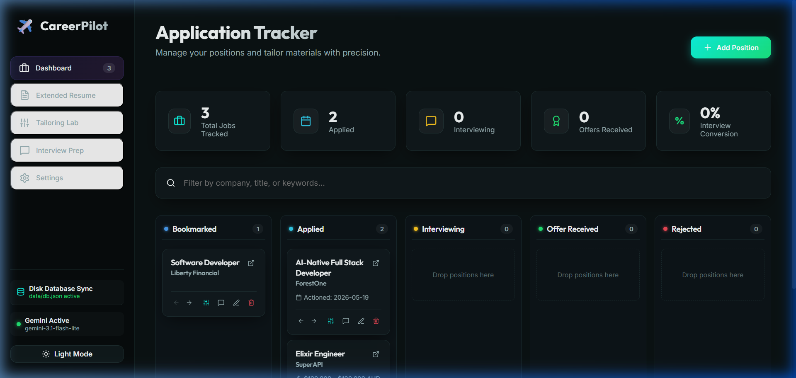

AI Engineer & Technical Operator with a Master’s from the University of Melbourne. Bridging the gap between cutting-edge research in LLMs, Multi-Agent Systems, and highly scalable production backend infrastructure using Go, Python, and Kubernetes.
An automated full-stack application featuring a local file-system synchronization engine and a modern dashboard. The system acts as an agentic partner to build, manage, and tailor resumes and job applications locally.
Includes an AI-driven optimizer leveraging Large Language Models (Gemini) to perform keyword density alignment, generate change logs, and coach behavioral interview questions based on the STAR response framework. Integrates a live web compiler to render, compile, and stream LaTeX resumes in real-time.

Created a state-of-the-art multimodal geolocation model for my Master's Thesis. The system analyzes unstructured text context, post metadata, and nested geospatial signals to place social media posts into complex hierarchic geographic buckets (state, city, municipality, and suburb).
Leveraged deep parameter-efficient tuning (LoRA) and instruction alignment to adjust Gemma-7B, LLaMA-8B, and Mistral-7B, evaluating on datasets with millions of historical geo-stamps.
A self-healing, multi-lingual RAG legal framework indexing constitution, legislative acts, and supreme court rulings. The system employs automated web crawlers to collect and map legal artifacts, vectorizing documents in both English and Nepali.
Features an autonomous **knowledge-base self-repair mechanism** that detects broken node matches, triggers recursive text re-chunking, and re-computes semantic vector embeddings dynamically.
Fine-tuned a transformer review-classification model based on BERT, hosting it inside a optimized FastAPI endpoint. Integrated into a clean React web interface with continuous Firebase CDN deployment.
Trained a ResNet-based Deep CNN classifier to inspect handwritten signatures. Curated and annotated a high-fidelity image dataset consisting of 1,200+ signatures to minimize forgery detection false-positives.
Developed patient-monitoring ML pipelines to calculate AKI risk margins. Analyzed ICU demographics and historical medication rosters using Random Forest & Gradient Boosting models with optimized ROC-AUC metrics.
Submit your message and the platform router will dispatch an alert event directly to Riwaz's terminal feed.